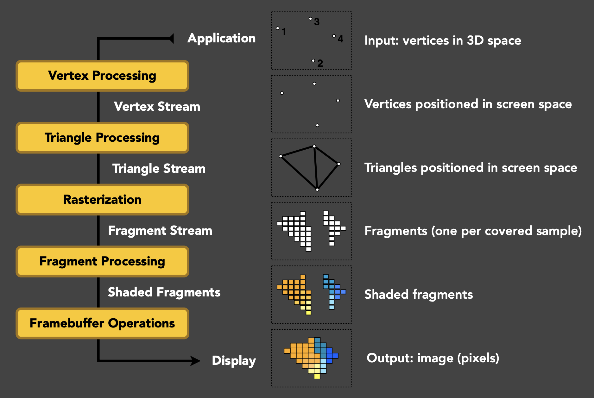
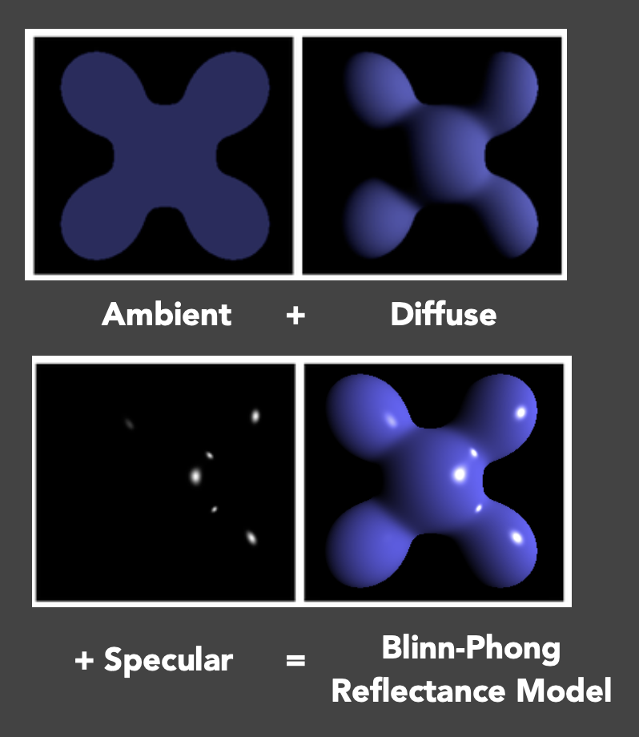
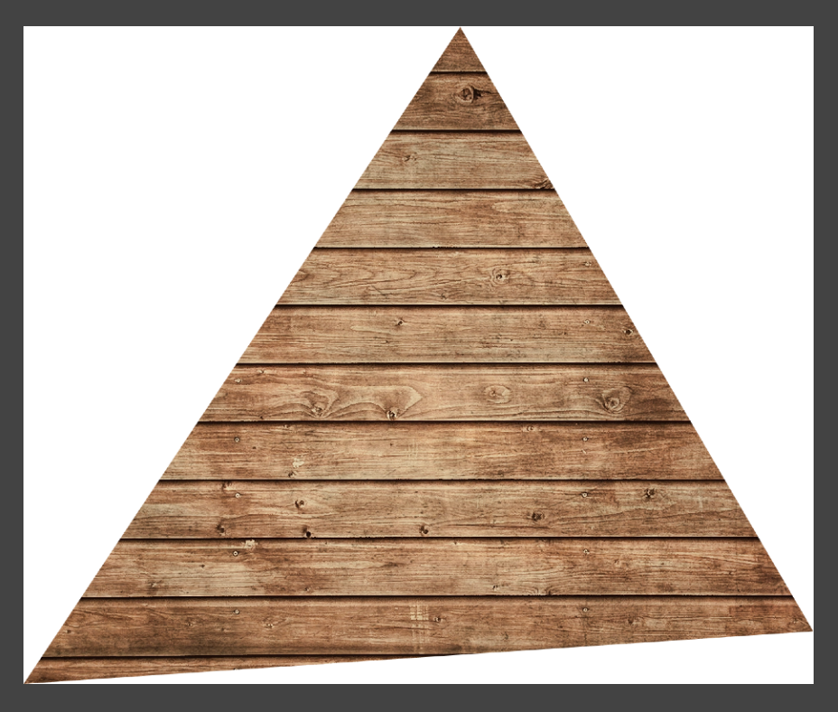
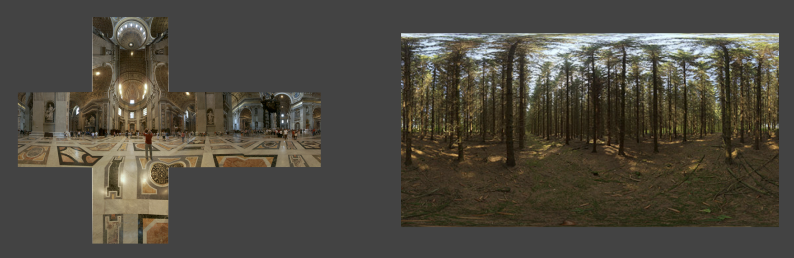
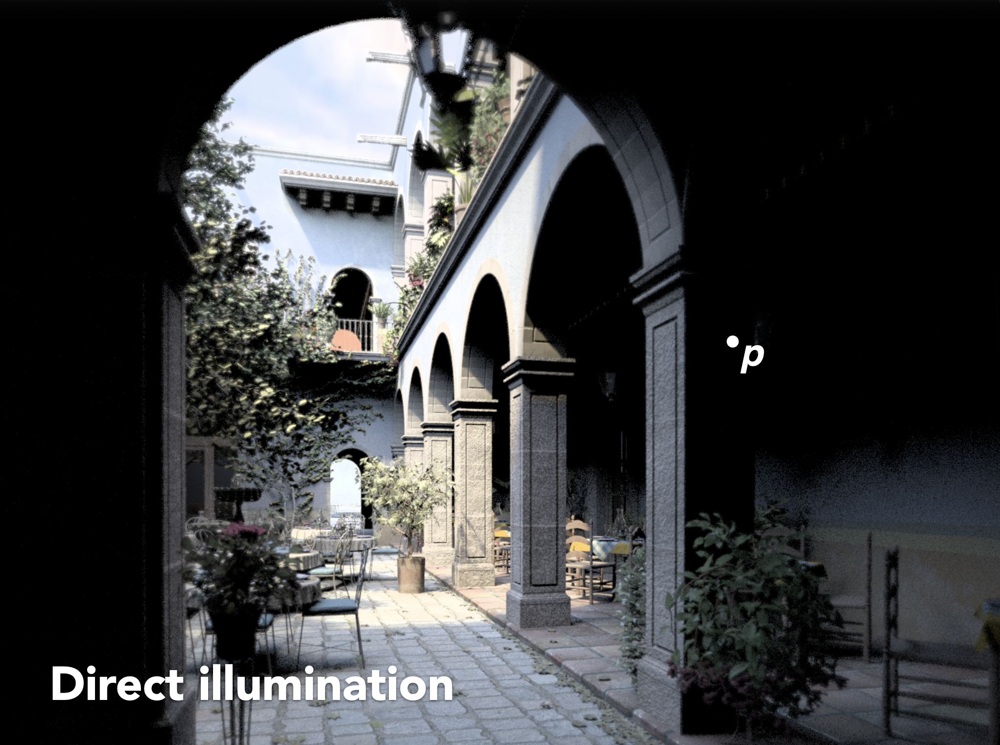

Recap of CG Basics
Basic GPU Hardware Pipeline
首先来回顾一下渲染管线的内容：

-
通过模型、视图、投影变换(model, view, projection transforms)，以及最后的视口(viewport)变换，将 3D 空间中的物体表示在屏幕上

-
然后对三角形进行光栅化，用一组片元(fragment)（有时也可直接称为像素）表示三角形

-
深度缓冲区可见性测试(z-buffer visibility tests)，记录三角形的远近（深度）

-
着色(shading)
- 比如 Blinn-Phong 反射模型，看起来还不错，但缺少真实感，原因在于环境光只是个常数，没有考虑间接光照、阴影等
- 这一过程在 GPU 上跑会快很多，原因是多个单元可以并行处理

-
纹理映射(texture mapping)和插值(interpolation)：根据三角形三个顶点的纹理坐标，插值计算得到三角形内任意一点的纹理坐标（重心坐标）

OpenGL
OpenGL 是一组从 CPU 调用 GPU 管道的 API。因此用什么语言实现 OpenGL 都没关系，我们更关心 GPU 是怎么执行的，这确保了它的跨平台(cross-platform)特性。
类似的现代图形学 API 有 DirectX, Vulkan 等。
缺点
- 碎片化(fragmented)：由社区维护，因而存在众多不同版本，这些版本有着不同的特性
- C 语言风格（意味着没有 OOP 的概念），不易使用
- 难以调试（不过这一问题在最近有所改善）
如果学过 GAMES101，那么 OpenGL 还是比较容易掌握的，因为课中提到的每一步在 OpenGL 都有对应的实现，比如要实现投影变换只需调用它提供的 API 即可。
我们可以把整个渲染过程类比画一幅油画。
- 放置物体/模型
- 设置画架(easel)的位置
- 将画布(canvas)附在画架上
- 在画布上绘画
- （（保持位置不变，绘制更多油画）将其他画布附在画架上，并继续作画）
- （使用先前的绘画作为参考）
实际上 OpenGL 也是严格遵循这六个步骤的。现在我们要用 OpenGL 渲染一个 3D 场景，流程如下：
-
放置物体/模型：
- 模型描述(model specification)：用户指定了对象的顶点、法线、纹理坐标，存储在顶点缓冲对象(vertex buffer object, VBO)中，发送给 GPU（与
.obj文件的存储方式很像） - 模型变换(model transformation)：使用 OpenGL 函数来获取矩阵，比如
glTranslate,glMultMatrix等，无需自己编写任何东西
- 模型描述(model specification)：用户指定了对象的顶点、法线、纹理坐标，存储在顶点缓冲对象(vertex buffer object, VBO)中，发送给 GPU（与
-
设置画架的位置：视图变换
- 创建或使用帧缓冲区(framebuffer)
-
只需简单调用就能设置相机（视图变换矩阵），例如
gluPerspectivevoid gluperspective( GLdouble fovy, GLdouble aspect, GLdouble zNear, GLdouble zFar );
-
将画布附在画架上 / 5. 保持位置不变，绘制更多油画：OpenGL 中的一次渲染过程(one rendering pass)
- 指定要使用的帧缓冲区
- 输出一个或多个纹理（着色、深度等）
- 渲染（片段着色器定义每个纹理上的内容）
- 多渲染目标(multiple render target)：只要指定一个帧缓冲区就能渲染出很多不同的纹理
- 实时渲染中不会立马将渲染结果显示在屏幕上，因为如果当前帧来不及渲染完的话，就会出现画面撕裂的问题，即同一时刻出现上下两半不同的渲染结果
- 游戏中通过选中「垂直同步」选项避免这一问题
- 一般的解决方案是将渲染结果暂时存在缓冲区中，等确保没问题后再一起渲染（双重缓冲）
-
在画布上绘画：如何着色，这时要用到顶点着色器和片元着色器
- 并行处理每个顶点：OpenGL 调用用户指定的顶点着色器，变换顶点（模型视图、投影）及其他操作
- OpenGL 光栅化每个图元(primitives)，为每个像素生成一个片元
-
并行处理每个片元：
- OpenGL 调用用户指定的片元着色器，进行着色与光照计算
- OpenGL 还默认处理深度缓冲区测试，也可以自己写
-
我们最需要关注的操作是自定义顶点和片段着色器，因为即便在 GUI（比如游戏引擎的编辑器）中，其他操作也都封装好了
总结
在每一趟(pass)中，
- 指定对象、相机、MVP 矩阵等
- 指定帧缓冲区和输入/输出纹理
- 指定顶点/片元着色器
- 当所有内容都在 GPU 上设置完毕后就可以开始渲染啦！
最后还有多趟渲染没讲。实际上之前在 CG 课中学过的阴影映射就是一个很经典的两趟渲染。
OpenGL Shading Language (GLSL)
顾名思义，着色语言(shading language)就是一种描述着色器怎么运作，怎么操作的语言，比如如何对顶点、片元着色。它采用一种和 C 类似的语法，但有更多的限制（其实也有更多好用的东西）。
着色语言的历史
参考 Cook 关于着色树的论文和 Renderman 离线渲染技术
- 上古时代：在 GPUs 上进行汇编编程
- Stanford 实时着色语言，在SGI工作
- 还是很久以前：NVINDA 的 Cg
- DirectX 的 HLSL（顶点 + 像素）
- OpenGL 的 GLSL（顶点 + 片元）
着色器的设置流程：
-
初始化（着色器本身稍后讨论）
- 创建（顶点与片元）着色器
- 编译着色器
- 将着色器附加到程序
- 链接程序
- 使用程序
-
着色器的源码本质上是字符串序列
- 编译步骤与常规程序类似
代码样例（FYI）
GLuint initshaders(GLenum type, const char *filename) {
// Using GLSL shaders, OpenGL book, page 679
GLuint shader = glCreateShader(type);
GLint compiled;
string str = textFileRead(filename);
GLchar * cstr = new GLchar[str.size()+1];
const GLchar * cstr2 = cstr; // Weirdness to get a const char
strcpy(cstr,str.c_str());
glShaderSource(shader, 1, &cstr2, NULL);
glCompileShader(shader);
glGetShaderiv(shader, GL_COMPILE_STATUS, &compiled);
if (!compiled) {
shadererrors(shader);
throw 3;
}
return shader;
}
GLuint initprogram(GLuint vertexshader, GLuint fragmentshader) {
GLuint program = glCreateProgram();
GLint linked;
glAttachShader(program, vertexshader);
glAttachShader(program, fragmentshader);
glLinkProgram(program);
glGetProgramiv(program, GL_LINK_STATUS, &linked);
if (linked) glUseProgram(program);
else {
programerrors(program);
throw 4;
}
return program;
}
attribute vec3 aVertexPosition;
attribute vec3 aNormalPosition;
attribute vec2 aTextureCoord;
uniform mat4 uModelViewMatrix;
uniform mat4 uProjectionMatrix;
varying highp vec2 vTextureCoord;
varying highp vec3 vFragPos;
varying highp vec3 vNormal;
void main(void) {
vFragPos = aVertexPosition;
vNormal = aNormalPosition;
gl_Position = uProjectionMatrix * uModelViewMatrix * vec4(aVertexPosition, 1.0);
vTextureCoord = aTextureCoord;
}
uniform sampler2D uSampler;
uniform vec3 uKd;
uniform vec3 uKs;
uniform vec3 uLightPos;
uniform vec3 uCameraPos;
uniform float uLightIntensity;
uniform int uTextureSample;
varying highp vec2 vTextureCoord;
varying highp vec3 vFragPos;
varying highp vec3 vNormal;
void main(void) {
vec3 color;
if (uTextureSample == 1) {
color = pow(texture2D(uSampler, vTextureCoord).rgb, vec3(2.2));
} else {
color = uKd;
}
vec3 ambient = 0.05 * color;
vec3 lightDir = normalize(uLightPos - vFragPos);
vec3 normal = normalize(vNormal);
float diff = max(dot(lightDir, normal), 0.0);
float light_atten_coff = uLightIntensity / length(uLightPos - vFragPos);
vec3 diffuse = diff * light_atten_coff * color;
vec3 viewDir = normalize(uCameraPos - vFragPos);
float spec = 0.0;
vec3 reflectDir = reflect(-lightDir, normal);
spec = pow(max(dot(viewDir, reflectDir), 0.0), 35.0);
vec3 specular = uKs * light_atten_coff * spec;
gl_FragColor = vec4(pow((ambient + diffuse + specular), vec3(1.0/2.2)), 1.0);
}
varying关键字用于在顶点着色器和片元着色器之间传递插值uniform关键字表示全局变量highp表示高精度sampler2D表示定义一个纹理，可以利用texture2D函数以及纹理坐标参数查询特定位置上的纹理值，通常有 4 个通道gl_Position表示顶点变换后的位置，而gl_FragColor用来表明片元的颜色，需要往这些变量设置值
Debugging Shaders
-
多年前：NVIDIA Nsight + Visual Studio
- 调试 GLSL 时需多个 GPUs
- 必须在HLSL中以软件模拟模式运行
-
现在的调试方案：
- Nsight Graphics（跨平台，但只能用在 N 卡上）
- RenderDoc（跨平台，无 GPUs 限制）
- 对于 WebGL，前者在官网中明确说明可以调试，而后者没有提供官方支持
-
闫老师的建议：由于没法直接打印中间值（因为这只能由 CPU 完成，但着色器工作在 GPU 中），所以一种比较粗暴的方法是直接拿电脑的颜色提取器（比如 macOS 自带的数码测色计(digital color meter)）获取渲染结果的颜色
The Rendering Equation
渲染方程(rendering equation)是渲染领域中一个非常重要的概念，像路径追踪等技术就是以它为基础的。它是一个描述了光线的传播的方程，具体公式如下：
在实时渲染中，需要对这个方程做一点小改动：
- 需显式考虑可见性(visibility)
- BRDF 项通常和余弦项一起考虑
这种调整的一个好处是可以很自然地处理环境光照(environment lighting)，即考虑各个方向的入射光。通常会用一个立方体或球形贴图（纹理）表示，不过这两种方法都有各自的问题。之后将会引入一种新的表示方法。

另外一个相关技术是全局光照，它包含直接光照和间接光照两部分。其中直接光照可直接通过上面的渲染方程计算出来；而间接光照则可以通过渲染方程的递归定义计算，比如某个点的入射光很有可能是来自其他物体表面的反射光。
例子



可以看到，弹射一次后就可以得到不错的间接光照效果，之后多弹几次效果提升就不那么明显了。
评论区